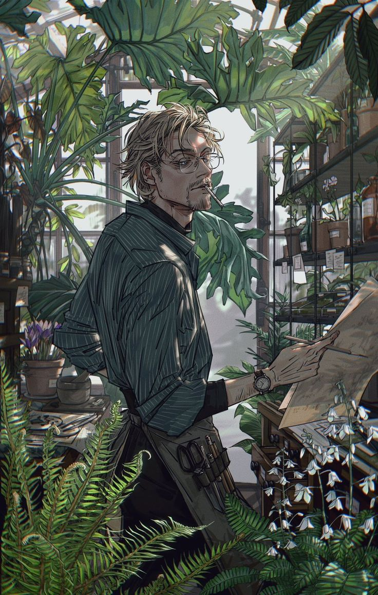

Roses
Roses classiques, anciennes ou grimpantes
4 € / tigeHERBIER DES ÂMES PERDUES | N° 035
Certaines fleurs poussent là où personne ne regarde.

FICHE PUBLIQUE
« C'est chill maaaan ~ »
CE QUE L'ON RACONTE
Vincent ne s'aventurait que rarement au-delà des bas-quartiers de Stalion. Qu'aurait-il bien pu chercher ailleurs, après tout ? Il ne connaissait que cette misère, ces rues fatiguées où la pauvreté semblait s'être incrustée jusque dans les murs, et n'avait jamais éprouvé le besoin d'en découvrir davantage. Ce monde lui convenait, non par affection particulière, mais parce qu'il avait appris à s'y fondre, à y exister sans que personne ne s'étonnait véritablement de sa présence. Aux yeux de ceux qui croisaient sa route, Vincent n'était qu'un jeune homme d'une petite trentaine d'années, vingt-neuf ans tout au plus, traînant derrière lui le poids invisible d'une existence qui semblait lui avoir refusé toute forme de répit. À ses chevilles paraissaient enchaînés les boulets de traumatismes jamais guéris, de souffrances anciennes et de blessures dont certaines n'avaient même plus de nom. Son corps entier semblait protester contre le moindre mouvement, tant sa silhouette frêle donnait l'impression de devoir se briser sous le simple effort de continuer à vivre. Pourtant, Vincent avançait, toujours avec cette même nonchalance désarmante, cette lenteur presque maladive qui rendait difficile de savoir s'il était réellement fatigué ou simplement indifférent à l'idée d'arriver quelque part.
D'un calme presque dérangeant, il n'était guère aisé d'engager la conversation avec lui, et plus difficile encore de s'assurer qu'il en suivait véritablement le cours. Ses réponses tardaient parfois à venir, lorsqu'elles venaient seulement, et ses yeux semblaient perpétuellement occupés à contempler quelque chose que nul autre ne pouvait percevoir. Peut-être son regard s'égarait-il dans les vestiges d'une hallucination, dans une pensée dont il avait lui-même oublié l'origine, ou simplement dans la fumée qui s'échappaient de l'éternelle cigarette coincée entre ses lèvres. Il pouvait en observer les formes pendant de longues minutes, tandis que son interlocuteur attendait vainement une réaction. Ce n'était pas nécessairement de l'impolitesse, encore moins du mépris, Vincent possédait seulement cette étrange faculté de s'absenter du monde sans jamais le quitter physiquement, laissant aux autres le soin de déterminer s'il était encore présent derrière ses paupières alourdies.
Dans sa boutique, Frègètal, il proposait à la vente toutes sortes de fleurs et de plantes, accompagnées de quelques préparations aux vertus supposément médicinales. On y trouvait des remèdes contre la toux, des pommades destinées aux brûlures légères, des infusions et autres recettes héritées de ces savoirs populaires que l'on se transmettait autrefois entre deux générations. Rien de bien extraordinaire en apparence, seulement de modestes remèdes de grand-mère, présentés au milieu d'une végétation si abondante qu'il fallait parfois chercher le comptoir derrière les feuillages. Une petite réputation s'était néanmoins attachée à ces préparations, entretenue par les rares habitués de l'établissement : il se racontait qu'elles ne fonctionnaient pas toujours. Certaines semblaient produire des effets presque miraculeux, tandis que d'autres ne procuraient pas le moindre soulagement, quand elles ne suscitaient pas quelques désagréments supplémentaires. Vincent, interrogé sur la question, n'aurait probablement offert qu'un haussement d'épaules accompagné d'une longue bouffée de fumée. Après tout, même les fleurs ne poussaient pas toujours comme on l'espérait, pourquoi ses remèdes auraient-ils dû faire exception ?
Si Vincent pouvait prétendre à une certaine renommée, ce n’était certainement pas grâce aux modestes remèdes qui garnissaient les étagères de Frègètal, mais plutôt à la qualité de marchandises autrement moins avouables. Le cannabis constituait l’essentiel de son commerce clandestin, bien que toutes sortes de substances illicites figuraient également parmi ses spécialités. Il approvisionnait aussi bien quelques consommateurs isolés que des organisations criminelles dont les membres, parfois, venaient négocier avec lui des quantités plus importantes. Car si Vincent ne possédait ni le tempérament ni les ambitions d’un véritable trafiquant, il excellait dans un domaine que ses clients savaient apprécier : la qualité de ses produits. Cultivées sur ses propres terres, entretenues de ses mains et étudiées avec une patience presque obsessionnelle, ses plantes bénéficiaient d’un savoir-faire qu’il avait perfectionné au fil des décennies. Ses préparations jouissaient ainsi d’une réputation particulière pour leur pureté et la constance de leurs effets. Jamais il ne cherchait à les diluer avec des substances de moindre qualité pour en augmenter artificiellement la quantité ou les bénéfices. Non par scrupule moral, ni même par souci véritable de la santé de ses acheteurs, mais parce qu’il considérait ces mélanges comme une manière regrettable de gâcher son travail. Il pouvait se montrer profondément négligent envers lui-même, mais lorsqu’il s’agissait de ses cultures et de ses préparations, Vincent retrouvait une rigueur presque surprenante.
Il ne déployait d’ailleurs pas davantage d’efforts pour dissimuler sa véritable nature. Il suffisait parfois d’une question un peu trop curieuse, d’une observation suffisamment attentive ou d’un mouvement de ses lèvres pour apercevoir les canines anormalement longues qui trahissaient son appartenance à la race vampirique. Vincent ne le criait pas sur tous les toits, certes, mais n’éprouvait aucune inquiétude particulière à l’idée que quelqu’un puisse le découvrir. À quoi bon s’en alarmer ? Avec ou sans crocs, il demeurait ce même homme décharné, aux gestes lents et au regard perpétuellement absent, dont la silhouette semblait davantage appeler la pitié que la méfiance. Et, quelque part, cette impression n’était pas entièrement trompeuse. Vincent était effectivement inoffensif dans bien des circonstances, incapable de rendre un coup ou de défendre sa propre personne avec la moindre conviction. Seulement, il aurait été imprudent de confondre cette absence d’agressivité avec une quelconque bonté. Certaines fréquentations, quelques occasions malheureuses et sa curiosité scientifique pouvaient le conduire à des extrémités autrement plus inquiétantes. Si la confection d’un remède ou la réussite d’une expérience exigeait un sacrifice, Vincent pouvait parfaitement envisager de le consentir, sans que le regret ou le remords ne vienne nécessairement troubler sa conscience. Il ne semblait pas éprouver suffisamment d’empathie pour mesurer pleinement la portée de certains de ses actes, et la souffrance d’autrui demeurait parfois, à ses yeux, une conséquence parmi d’autres plutôt qu’une raison de renoncer.
Il était d’autant plus difficile à cerner qu’il ne semblait avoir absolument rien à perdre. Menacer Vincent relevait presque de l’absurde : la perspective de mourir ne l’effrayait guère davantage que celle de continuer à vivre, et la douleur, depuis longtemps, avait cessé de constituer un argument particulièrement convaincant. Il n’était ni courageux ni téméraire, simplement dépourvu de cet instinct de préservation qui pousse ordinairement les hommes à protéger ce qu’ils possèdent. Obéissant, docile, rarement enclin à contredire quiconque, il pouvait se laisser entraîner dans les affaires les plus douteuses sans véritablement chercher à en comprendre les enjeux. Lui confier un secret n’offrait d’ailleurs aucune garantie de discrétion. Si le révéler à quelqu’un lui permettait de retrouver sa tranquillité, il pouvait parfaitement le faire sans éprouver la moindre culpabilité, non par malveillance, mais parce que la notion même de loyauté lui échappait parfois lorsqu’elle entrait en conflit avec son besoin de paix. Encore fallait-il qu’il se souvienne de ce qu’on lui avait confié : certaines confidences disparaissaient de son esprit presque aussitôt prononcées, englouties dans cette brume permanente où se mêlaient les souvenirs, les hallucinations et les pensées inachevées.
Car Vincent demeurait, avant toute chose, prisonnier de ses dépendances. Les années, les expériences et même sa transformation vampirique n’avaient jamais réussi à le délivrer de cette emprise, elles lui avaient tout au plus permis d’en repousser les limites. Il n’était pratiquement jamais sobre. Quelque substance circulait toujours dans son organisme, entretenant cette torpeur familière dont il avait fait son état naturel, au point que la lucidité lui paraissait presque plus étrangère que l’ivresse. Ses pupilles, fréquemment dilatées, trahissaient ce que ses gestes languissants et ses silences interminables laissaient déjà deviner. Vincent vivait dans un monde dont les contours demeuraient perpétuellement incertains, un monde qu’il préférait observer à travers le voile des substances plutôt que d’affronter dans toute sa netteté. Et peut-être était-ce là ce qui le rendait véritablement imprévisible : non pas la cruauté d’un homme qui désirait faire le mal, mais l’indifférence de quelqu’un qui avait depuis longtemps cessé de distinguer clairement ce qui devait avoir de l’importance.
LE COMPTOIR DES MERVEILLES
À la tige, à la branche ou en pot · selon les saisons
Roses classiques, anciennes ou grimpantes
4 € / tigeTulipes, jonquilles, narcisses
3 € / tigeMarguerites, bleuets, cosmos
2 € / tigeTournesols, dahlias, zinnias
4 € / tigePivoines, renoncules, anémones
6 € / tigeLys, glaïeuls, iris
6 € / tigeHortensias, chrysanthèmes
7 € / tigeOrchidées coupées, oiseaux de paradis
10 € / tigeLavande, immortelles, statices
8 € / botteEucalyptus, fougères, ruscus
3 € / brancheBasilic, menthe, thym, romarin
6 € / potPothos, monstera, ficus
Dès 12 € / potEcheveria, aloe, cactus
Dès 7 € / potUne composition pour chaque occasion
Remerciements, amitié, excuses, simple plaisir d’offrir
20 €Anniversaires, félicitations, réussites, fêtes
35 €Déclarations, rendez-vous, anniversaires de couple
45 €Compositions douces, peu parfumées sur demande
35 €Bouquet personnalisé, décorations en supplément
Dès 90 €Condoléances et compositions sobres
Dès 50 €Préparations de confort, sans promesse de guérison
Sirop au miel et au thym · Confort de la gorge ; jamais de miel avant 1 an
8 €Infusion de mauve · Boisson adoucissante traditionnelle
6 €Tisane de thym et citron · Boisson chaude réconfortante
6 €Infusion de mélisse · Rituel de détente
7 €Tisane de camomille · Relaxation traditionnelle
6 €Infusion de menthe · Prudence en cas de reflux
7 €Infusion au gingembre · Peut soulager certaines nausées
7 €Baume au calendula · Pour peau intacte
10 €Baume végétal · Protection et hydratation
5 €Gel apaisant · Hors réaction allergique
8 €Huile de massage · Massage de confort
12 €Baume protecteur · Hydratation de la peau
9 €Trousse de pansements stériles · Nettoyage à l’eau
6 €Un soin imaginé spécialement pour vous
Décrivez votre problème à Vincent : il vous propose une préparation botanique personnalisée de confort, selon vos besoins et vos préférences. Sans garantie de guérison.
50 €Fleurs séchées
Fumé ou ingéré
Détente, euphorie, perception modifiée, appétit accru.
Anxiété, paranoïa, mémoire immédiate et coordination perturbées.
Dépendance possible, troubles de l’attention, atteintes respiratoires si fumé.
Résine compacte
Généralement fumée
Détente, euphorie et sensations modifiées.
Vertiges, somnolence, anxiété, désorientation, teneur en THC variable.
Dépendance possible, troubles cognitifs et risques respiratoires liés à la fumée.
Poudre blanche
Principalement sniffée
Énergie, euphorie, assurance, vigilance accrue.
Palpitations, anxiété, hyperthermie, infarctus ou AVC.
Dépendance, dépression, troubles cardiaques, lésions nasales.
Cailloux de cocaïne basée
Fumé
Euphorie intense mais brève, excitation.
Angoisse, paranoïa, convulsions, douleurs thoraciques.
Dépendance forte, épuisement, atteintes respiratoires et cardiovasculaires.
Poudre
Sniffée, fumée ou injectée
Euphorie, apaisement, atténuation de la douleur.
Somnolence, nausées, dépression respiratoire et overdose mortelle.
Dépendance physique, sevrage, constipation, infections possibles par injection.
Comprimés, poudre ou cristaux
Avalée, parfois sniffée
Euphorie, empathie, sociabilité, sensations intensifiées.
Hyperthermie, confusion, troubles cardiaques, déshydratation ou excès d’eau.
Troubles de l’humeur, du sommeil et de la mémoire, consommation problématique.
Poudre ou cristaux
Principalement sniffée
Dissociation, perception du temps et de l’espace modifiée.
Désorientation, chutes, nausées, perte de conscience.
Dépendance, troubles de mémoire, atteintes graves de la vessie.
Buvards ou gouttes
Voie orale
Perceptions amplifiées, distorsions du temps, hallucinations.
Panique, confusion, anxiété et accidents liés aux perceptions altérées.
Troubles perceptifs persistants rares, risque psychiatrique chez les personnes vulnérables.
Poudre ou pâte
Sniffée ou ingérée
Éveil, énergie, concentration, appétit diminué.
Insomnie, agitation, hypertension, hyperthermie.
Dépendance, épuisement, troubles cardiovasculaires et psychiques.
Cristaux ou poudre
Fumée, sniffée ou injectée
Euphorie, vigilance et énergie intenses.
Agitation, paranoïa, arythmies, convulsions, hyperthermie.
Dépendance sévère, atteintes cognitives, cardiaques et dentaires.